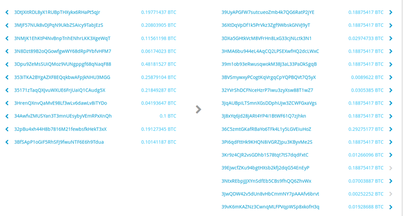
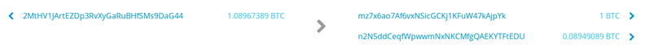
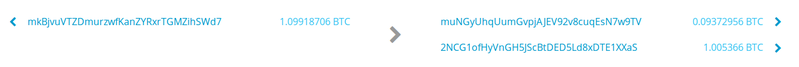
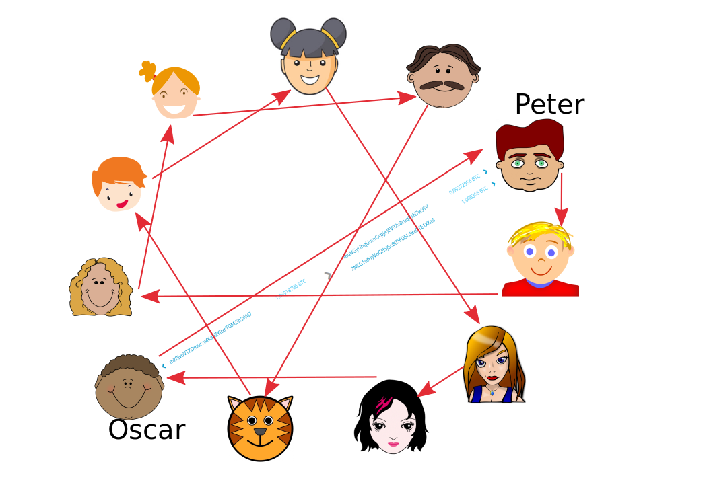

Multiparty S6
The multiparty symmetrical Schnorr signature scriptless script shuffle
This blog is in the category of "a new-ish idea about privacy tech"; like similar previous ones (e.g.: CoinJoinXT) it is little more than an idea, in this case I believe it is correct, but (a) I could be wrong and there could be a flaw in the thinking and (b) it's not entirely clear how practically realistic it will be. What I do hope, however, is that the kernel of this idea is useful, perhaps in Layer 2 tech or in something I haven't even thought about.
The Goal
As with similar writeups, I feel it's important that the reader has some idea what the goal is. Here is the goal I mostly had in mind when thinking this through:
- 11 (or 6, or 24...) anonymous users coordinate (on a lobby server, with a Joinmarket-style incentive, on a p2p network somehow - whatever). They each have 1 BTC utxos (put off denomination questions for later) and they want a very meaningful privacy increase.
- Instead of doing a CoinJoin which is obvious or a whole set of CoinSwaps (see earlier posts) which could get complicated for 11 people, they want to kind of "permute" or "shuffle" all their utxos.
- It's a year or two from now and a Schnorr soft fork has gone through in Bitcoin mainchain; they're going to use the scriptless script primitive (see here or Poelstra and Nick's writeup here, or the following sections for more on this), to achieve the goal via multisig outputs that look like other outputs.
- They do effectively a "multiparty swap" or "shuffle" to achieve this goal. Each of the 11 participants funds a single prepared destination address, which is (though not seen because Schnorr) an 11 of 11 multisig. Before they do so, they get hold of a presigned (by everyone) backout transaction to get their coins back if something goes wrong.
- They decide a shuffle/permutation: e.g. Alice is paying Bob 1, Charlie is paying Edward etc etc. ... we're talking here about a member of the set of permutations of 11 objects. Obviously the idea is that everyone pays in 1, everyone gets back 1. They prepare transactions for these payments.
- Once everything is set up they pass around adaptor signatures which create the atomicity effect we want - when any 1 of the 11 transactions goes through, all of them will go through.
- In a certain order, that we'll discuss, they can now pass real (Schnorr) signatures (note that even though "real" they are still "partial" signatures - they're 1 of 11 needed in the multisig) on the transactions such that one member of the group has a full set and can broadcast the transaction paying themselves. Everyone else sees this on the blockchain, and combining the signatures in this published transaction, with the earlier adaptor signatures, has enough information to broadcast the other transaction which pays themself.
Let's consider the advantages of doing this:
- Shared with a 2 of 2 CoinSwap: there is no linkage on the blockchain between the 11 transactions. Effectively, Alice has swapped her coin history with Bob, Charlie with Edward etc..
- Big difference from the above: we can create, like a multiparty coinjoin, the highly desirable scenario that individual participants do not know the linkages between inputs for transactions other than their own. As we know, there are various designs of CoinJoin metaprotocols that allow this to different extents, but if CoinSwap is restricted to 2 of 2 this is impossible (no cryptographic trickery prevents the deduction "if it's not mine, it's yours!").
- Biggest difference from CoinJoin is that CoinSwap transactions (whether 2-2 or 11-11) can look like ordinary payments on the blockchain, although there's meaningful wiggle room in how exactly they will look. If we manage to combine this with even slight variations in size of individual payments, and probably a little timing de-correlation too, the task of a blockchain analyst in identifying these is near impossible (notice that this hugely desirable steganographic feature is shared with PayJoin and CoinJoinXT, previous blog posts - notice though, that it depends on Schnorr for indistinguishable multisig and for adaptor signatures, unless ECDSA-n-party computation is a thing, which I doubt is currently a thing for more than 2 parties, but see e.g. this for recent research in this area.).
Illustrations comparing CoinJoin, CoinSwap and multiparty S6:

Typical CoinJoin transaction - it's very obvious because of equal output amounts; the histories of coins are not disconnected, but fused


Typical 2-party CoinSwap transactions; they are entirely separate on the blockchain, with different timestamps they could be extremely difficult to find.
* *
A very simplified multiparty S6 as envisaged: note that Oscar to Peter shows on a diagonal a simple transaction of the type used in CoinSwap; in fact there is one such transaction for every red arrow; i.e. each red arrow represents a payment from one of the group of 11 to another, in a random permutation. All of these transactions will be atomic; either they will all happen or none will. But none will be linked on the blockchain.
Schnorr and adaptor signatures
Achieving the goals above is crucially dependent on the concept of an adaptor signature as developed by Andrew Poelstra (see some detailed descriptions as mentioned here) in his work on "scriptless scripts". A large part of the earlier blog post on the topic of the scriptless script based swap, was explaining this concept. I want to write an explanation which is easier to understand. I will try :)
A basic Schnorr signature on a message \(m\) using a public key \(P\) whose private key is \(x\), looks like this:
\(\sigma = k + \mathbb{H}(P||R||m) x \quad, R = kG \quad \textrm{Publish: }\ (R,\sigma)\)
\(k\) is called the nonce, and \(R\) is the nonce point (point on the curve corresponding). We shorten the hash function \(\mathbb{H}(\ldots)\) to just \(e\), often.
Schnorr signatures are linear in the keys, in that:
\(\sigma_1 + \sigma_2 = (k_1 + k_2) + e (x_1+x_2)\)
Combining signatures in this way is unsafe in many contexts, in particular multisignature in Bitcoin. See the paper on Musig and this summary for the details on how the weakness (basically, potential of key subtraction) is addressed in detail, using interactivity between the parties cooperating to create the agreggated Schnorr signature. As long as this is properly addressed, though, the linearity property is retained.
Let me emphasise that the rest of this post will ignore the correct construction of keys and nonce points for safe Schnorr multisig; we will just talk about Alice, Bob and Charlie adding keys together and adding signatures together; the difference is crucial in practice but I believe does not alter any of the concepts being outlined.
Partial Signatures
With the above bolded caveats in mind, it'll be important for the following to understand the idea of a "partial signature" in a Schnorr multisig context. What we're doing is to create a single signature \(\sigma\) which represents, say, a 2 of 2 multisignature. Say it's Alice and Bob (A, B). Then Alice would produce this partial signature:
\(\sigma_A = k_A + \mathbb{H}(P_A + P_B || R_A + R_B || m) x_A\)
Notice how it's not a valid signature according to the Schnorr definition because the nonce \(k_A\) does not correspond to the nonce point \(R_A + R_B\) and because the private key does not correspond to the public key \(P_A+P_B\).
However when Bob adds his partial signature:
\(\sigma_B = k_B + \mathbb{H}(P_A + P_B || R_A + R_B || m) x_B\)
... to Alice's, the sum of the two is a valid signature on the message, with the sum of the keys.
We will make use of this shortly.
Adaptor Signatures
A creator of a signature can hide a verifiable secret value in a signature, using simple addition. They can then pass across the signature without the secret value, making it not valid, but verifiable as "a signature with the secret not included". This is what Poelstra means by his concept "adaptor signature". It looks like this:
\(\sigma' = k + \mathbb{H}(P||R+T||m) x \quad R=kG,\ T=tG \)
(from now on, note that ' indicates adaptor signatures). To repeat, it's not a valid signature, but: it can be verified that adding the discrete log of \(T\) *to \(\sigma'\) will yield a valid signature on the message m and the public key \(P\)*.
Refer back to the earlier blog post if you want to check the mathematical details on that.
The alert reader will notice how similar the "adaptor signature" and "partial signature" concepts are - it's almost the same mathematical change, but with a very different purpose/application, as we expand on below:
Atomicity for two parties
This trick is already cool - if I ever pass you the secret value \(t\), you'll be able to form a full valid signature. But with an additional nuance it's possible to make this a two-way promise, so we have the outline of an atomicity property, which can be very powerful. If the contents of the thing being signed, including the nonce points \(R\) and the public keys \(P\) are fixed in advance, we could create a situation where the promise works both ways:
\(P, R, m\) are known \(\therefore \sigma = k + t + \mathbb{H}(P||R+T||m) x\) is fixed. If the adaptor is shared by the owner of the private key \(x\), i.e. if he passes to a counterparty the value \(\sigma' = k + \mathbb{H}(P||R+T||m) x\), then either direction of publication reveals the other:
- If the full signature \(\sigma\) is revealed, the secret is revealed as \(t = \sigma - \sigma'\)
- If the secret \(t\) is revealed, the full signature is revealed: \(\sigma = t + \sigma'\)
This atomicity is the basic of the scriptless script atomic swap published by Poelstra and explained in my earlier post.
Atomicity for N parties
This is the novel idea in this post.
Suppose we have fixed \(\Sigma P\), \(\Sigma R\) and a single message \(m\). In other words several participants signing together the same message (Bitcoin transaction).This is the scenario for Schnorr aggregated multisig, modulo the complexity of Musig which as explained above I'm deliberately ignoring. Without adaptors, each party will have to produce a partial signature as already described, and then they can all be added together to create a fully valid Schnorr signature.
Now suppose each of 3 parties (Alice, Bob, Charlie) makes an adaptor signature for their partial signature:
\(\sigma_A' = k_A + \mathbb{H}(\Sigma P || \Sigma R + \Sigma T || m) x_A\)
Little explanatory note on this: each party will have to share their public \(T\) values (which, remember are curve points corresponding to the adaptor secrets \(t\)), so they will all know how to correctly calculate the hash preimage by "combining" (here just adding, but with musig it's more complicated) their public keys, and then linearly adding in all their \(T\) public values to the corresponding \(R\) nonce points as for a normal Schnorr signature.
Similarly for Bob, Charlie:
\(\sigma_B' = k_B + \mathbb{H}(\Sigma P || \Sigma R + \Sigma T || m) x_B\)
\(\sigma_C' = k_C + \mathbb{H}(\Sigma P || \Sigma R + \Sigma T || m) x_C\)
These can then be shared (all with all) and are verifiable in the same way as previously, e.g.:
\(\sigma_A' G \stackrel{?}{=} R_A + \mathbb{H}(\Sigma P || \Sigma R + \Sigma T ||m) P_A \)
But, it seems to get a bit confusing when you ask what happens if one party reveals either a full \(\sigma\) value, or a secret \(t\).
For example, what if Alice reveals her full partial signature (yes I meant that!) \(\sigma_A =k_A + t_A + \mathbb{H}(...) x_A\)?
One partial signature on its own is not enough for Bob or Charlie to do anything. If Alice and Bob do this, and pass these partials to Charlie, then he can complete and publish. But we want atomicity. What we want is:
- If the complete transaction signature is ever published, all parties can learn the adaptor secrets \(t\).
- If any or all parties learn the adaptor secrets \(t\) they can publish the complete transaction.
It's clear why that's the desire: that would mean you could make multiple different transactions, sharing the same set of adaptor secrets, and have it so that if one transaction gets published all the others do!
But wait! Something was horribly obfuscated in those bullet points. "learn the adaptor secrets"? All of them, or which ones?
That this is crucial is easily seen by considering the following "attack":
Suppose Alice, Bob, Charlie make three transactions, each of which pays out of a 3-of-3 Schnorr multisig, between them. The idea would be (as you've probably gathered from the build-up) that if any 1 transaction, say the first one paying Bob, gets broadcast, then both Alice and Charlie could broadcast the other 2 transactions, paying each of them, because they "learnt the adaptor secrets". But: if say Alice kicks off, reveals her adaptor secret \(t_A\), then couldn't Bob and Charlie collude? They could take the partial signature of Alice:
\(\sigma_A = k_A + t_A + \mathbb{H}(\ldots)x_A\)
and then between themselves share and construct their "joint" partial signature:
\(\sigma_{BC} = k_B + k_C + t_B + t_C +\mathbb{H}(\ldots)(x_B+x_C)\)
then add this to \(\sigma_A\). They could do this for the two transactions paying them and publish them to the blockchain. It may seem at first glance that this is a problem, because in doing so they haven't revealed their individual adaptor secrets \(t_B, t_C\) but have instead revealed their sum \(t_B+t_C\).
However this is not a problem! One way of looking at it is adaptor signatures are just as linear as proper Schnorr signatures. They are thus aggregatable. From Alice's point of view, although she is taking part in a 3-of-3 Schnorr multisig, she may just as well be participating in a 2-of-2 with a single party, if Bob and Charlie choose to collude and combine in that way. What will Alice see on the blockchain?
\(\sigma = k_A + k_B + k_C + t_A + t_B + t_C + \mathbb{H}(\ldots)(x_A+x_B+x_C)\)
But she already got adaptor signatures from Bob and Charlie, so she can remove them:
\(\sigma - \sigma_A - \sigma_B' - \sigma_C' = t_B + t_C\).
Now possessing the value of the sum \(t_B+t_C\), she can add this to pre-existing adaptor signatures for the transaction paying her and get the complete multisignature on those!
Unfairly linear signatures for the win!
Protocol Outline
We've now covered the meat of the concepts; so this instantiation phase will either be easy to follow, or, if you found the above slightly opaque, will hopefully make it clearer by being more concrete.
We're now ready to outline this "multiparty SSSSSS" design :) We'll break it into three phases.
Because 11 party would be too tedious, we'll stick to Alice, Bob, Charlie three party case as above.
Getting clear on notation: \(D_x\) will be destination addresses, transactions will be \(\tau_x\), adaptor secrets will be \(t_x\), corresponding curve points: \(T_x\). Signatures will be \(\sigma_x\) and adaptor signatures will be marked with a ', so \(\sigma_{x}'\). The subscripts will almost always be one of \(A, B, C\) for Alice, Bob, Charlie.
Phase 1 - Setup
We first negotiate three destination addresses: \(D_A, D_B, D_C\). Here the subscripts denote the payer into the address. So after the end of the setup the first will contain a coin paid by Alice, the second by Bob and the third by Charlie. The preparation of these addresses/keys will of course be done with Musig but to reiterate, we are ignoring the complexity there.
The three parties then all provide signatures on backout transactions such that each party gets their money back after a timeout. See the section "Timing Controls" for more details on this.
Once backouts are presigned, all parties pay into the destinations as above and wait for confirms.
Parties will agree in advance on the "shuffle"/permutation of coins, i.e. who will be paying who; this is related to Timing Control, so again, see that section. The exact negotiation protocol to decide the permutation is left open here. Once agreed, we know that we are going to be arranging three transactions paying out of \(D_A, D_B, D_C\), we'll call these \(\tau_{AB}, \tau_{BC}, \tau_{CA}\) respectively, where the second subscript indicates who receives the coin.
Phase 2 - Adaptors
Each participant chooses randomly their adaptor secret \(t_A, t_B, t_C\) and then shares \(T_A, T_B, T_C\) with all others (technical note: this might need to happen in setup phase). They then also all provide adaptor signatures on all of three transactions \(\tau_{AB}, \tau_{BC}, \tau_{CA}\) to each other. Note that there is no risk in doing so; the adaptor signatures are useless without receiving the adaptor secrets. Now each party must make two checks on each received adaptor signature:
- That it correctly matches the intended transaction \(\tau\) and the set of agreed keys in the setup
- Crucially that each of the adaptor signatures from any counterparty correctly matches the same adaptor secret point \(T\).
("Crucial" of course because without using the same adaptor secrets, we don't get our desired atomicity across a set of transactions).
To be more concrete, here are the actions of Bob:
- Generate a single adaptor secret randomly: \(t_B \stackrel{$}{\leftarrow} \mathbb{Z}_N\)
- Broadcast \(T_B = t_B G\) to Alice, Charlie
- Having agreed on all three payout transactions \(\tau_{AB}, \tau_{BC}, \tau_{CA}\), generate three adaptor signatures: \(\sigma_{B\tau_{AB}}' = k_{B\tau_{AB}} + \mathbb{H}(\Sigma P_{AB} || \Sigma R_{AB} + \Sigma T || m_{\tau_{AB}}) x_{B\tau_{AB}}\), \(\sigma_{B\tau_{BC}}' = k_{B\tau_{BC}} + \mathbb{H}(\Sigma P_{BC} || \Sigma R_{BC} + \Sigma T || m_{\tau_{BC}}) x_{B\tau_{BC}}\), \(\sigma_{B\tau_{CA}}' = k_{B\tau_{CA}} + \mathbb{H}(\Sigma P_{CA} || \Sigma R_{CA} + \Sigma T || m_{\tau_{CA}}) x_{B\tau_{CA}}\).
- Broadcast these adaptors to Alice, Charlie.
- Receive the 2 x 3 = 6 corresponding adaptors from Alice and Charlie. Verify each one (note the above bullet points).
Assuming all parties accept the adaptor signatures, we are ready to proceed to the last phase. If any communication or protocol failure occurs, all parties must fall back to the backout transactions presigned in the Setup phase.
(Technical note: it is not necessary for all parties to share all adaptors, in general, but for simplicity we use that model, since it hurts nothing I believe).
Phase 3 - Execution
The order of events in this final execution phase is important for safety, but we defer that to the next section "Timing Controls". Here we'll just show how events will proceed if everything goes correctly, in a randomly chosen order.
- Alice and Charlie send full partial(! i.e. not adaptor) signatures on \(\tau_{AB}\) to Bob, i.e. the transaction that pays Bob. So they send \(\sigma_{A\tau_{AB}}\) and \(\sigma_{C\tau_{AB}}\), respectively.
- Bob can add this to his own full partial signature on the same transaction, constructing: \(\sigma_{\tau_{AB}}\) and using this to broadcast \(\tau_{AB}\) to the network, receiving his coin.
- Alice will read \(\sigma_{C\tau_{AB}} + \sigma_{B\tau_{AB}} = \sigma_{\tau_{AB}} - \sigma_{A\tau_{AB}}\) from this broadcast signature and from this deduce the value of \(t_B+t_C = \sigma_{C\tau_{AB}} + \sigma_{B\tau_{AB}} - \sigma_{C\tau_{AB}}' + \sigma_{B\tau_{AB}}'\).
- Alice can add this aggregated adaptor secret \(t_B+t_C\) to the pre-existing adaptors \(\sigma_{B\tau_{CA}}' + \sigma_{C\tau_{CA}}'\) to get \(\sigma_{B\tau_{CA}} + \sigma_{C\tau_{CA}}\), which she can then add to \(\sigma_{A\tau_{CA}}\) to get a fully valid \(\sigma_{\tau_{CA}}\) and broadcast this to the network to receive her 1 coin.
- Charlie can do exactly the same as Alice for the last transaction, \(\tau_{BC}\) and receive his coin.
Thus both other parties, after the first spend, were able to claim their coin by creating complete signatures through combining the adaptor signatures with the revealed (possibly aggregated) adaptor secrets. (Technical note: in a protocol we can allow participants to share adaptor secrets at the appropriate times instead of having it deduced from transaction broadcasts, as in the case of CoinSwap, just as a kind of politeness, but this is not important).
Timing Controls
In the 2 party scriptless script swap, as in earlier CoinSwap designs, we simply account for the asymmetry of timing of revealing priviliged information (e.g. signatures) using an asymmetry of timelocks. The one who transfers something valuable first (a signature) must have an earlier ability to refunds coins that are "stuck" due to protocol non-completion, else the possessor of the adaptor secret / CoinSwap secret, who does not reveal it first, may wait for the window where he can reclaim and the other cannot, to both reclaim and use the secret to steal the other's coins.
Here we must follow a similar principle, just extended to multiple parties.
Suppose, naively, we just used the same locktime on each of the three refund transactions.
Now suppose Alice, at the start of Phase 3, reveals her full signature first, on transaction \(\tau_{AB}\) which pays Bob. And suppose for maximal pessimism that Bob and Charlie are colluding to defraud Alice. They will simply wait until the moment of the timeout and attempt to cheat Alice: try to broadcast both of their own refunds, while spending the transaction for which Alice provided the full signature (having done so, she has revealed her adaptor secret to the other two).
Thus by instead making Alice's backout locktime the earliest, she is safe in transferring her full signature, and thus her adaptor secret first. In this case if Bob and Charlie collude, they can do no better than publish this spend before that (earliest) timeout, and in so doing, reveal the aggregate of their adaptor secrets atomically so Alice can claim her money well before their backouts become active, as intended by system design.
Now let's consider the second sender of a full signature, say it's Bob. Suppose we let Charlie's locktime be identical to Bob's. And for maximal pessimism let's say Alice and Charlie collude. Here, Charlie could refuse to pass his signature to Bob and attempt to reclaim his coin at the exact moment of the timeout, while spending Bob's (depending on the exact permutation of spends, but at least, it's possible). Even though Alice didn't back out at her timeout in this scenario, which is weird, clearly this scenario is not safe for Bob, he has passed across a signature to Charlie with no time based defence against him.
These considerations make it obvious, I think, that the obviously sound way to do it is to stagger the locktime values according to the order in which signatures, and therefore secrets, are revealed. If the order of signature transfers is: first Alice, then Bob, then Charlie, then the locktimes on the backouts which pay each must obey \(L_A < L_B < L_C\).
So I believe this ordering must be settled on in Phase 1 (because we define these locktimes before signing the backout transactions).
Generalisation from 3-3 to N-N.
I believe this is trivial, modulo practicality.
Practical considerations, advantages
The scenario described is a multiparty coinswap in which essentially a group of \(N\) parties could randomly shuffle history of their coins. This could be done with or without a coordinator (either Joinmarket style or server style), could possibly be done with a Coinshuffle++ type coordination mechanism and/or blinding.
Practicality: the biggest limitation is that of CoinSwap generally, but extended further: using staggered locktime backouts means that in cases of failure, participants may have to wait a long time for coin recovery. This gets linearly worse with anonymity set, which is not good. Would love to find a trick to avoid that.
Expanding further on that same limitation, a larger number of participants makes worse the problem that I've previously called "XBI", or "cross block interactivity". There's a lot of exposure to DOS attacks and simple network failure when participants not only have to coordinate, but have to do so more than once. This could partially be addressed with incentives, e.g. fidelity bonds, but I'm not convinced.
On the positive side, there could be a tremendous boon over the 2-party case in that it's possible here to have a group of anonymous participants shuffle the history of their coins without any of the parties knowing the others' linkages.
Also positively, such larger group swaps may offer much larger privacy improvements in a very economical way (a few hundred bytes on chain per participant vs tens or hundreds of kilobytes via coinjoin? complete finger in the air here of course).
Leaving open: can amount decorrelation be achieved in a more powerful way in this model? I believe so, for example by splitting amounts into subsets across subsets of participants in interesting ways. Fees can also be used for noise. I think the most powerful version of this model would be very powerful indeed, but needs more detailed analysis, and this blog post is already too long.
Other applications: also leaving this open. Perhaps using adaptor signatures in groups like this (exploiting the linearity of adaptor signatures) has applications to second layer tech like Lightning or similar contracting.